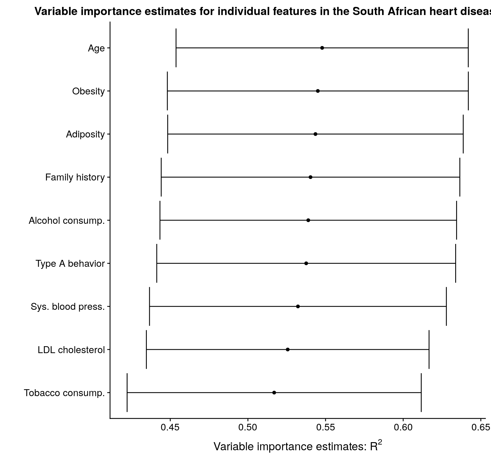
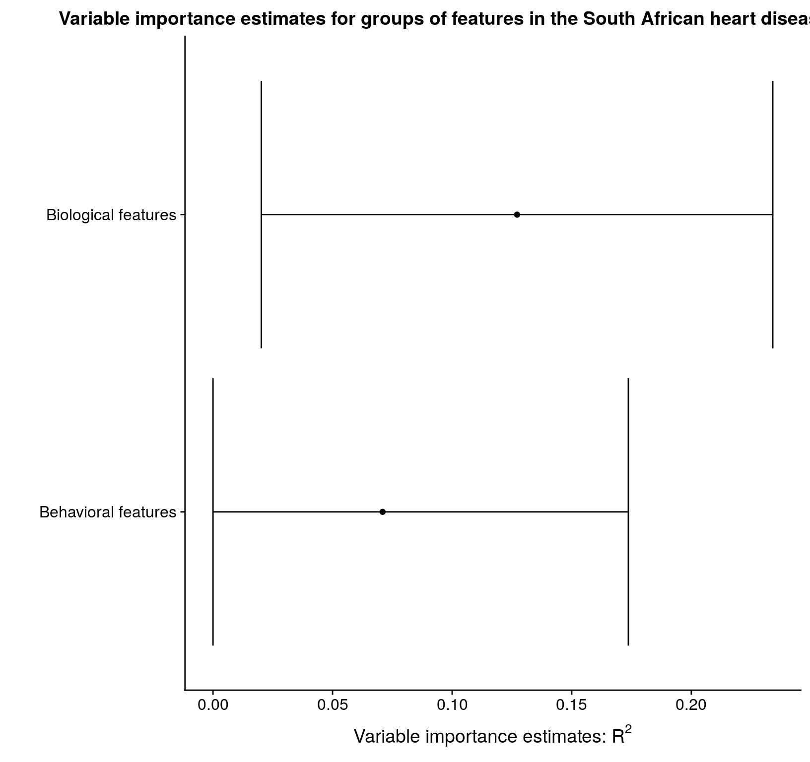

vignettes/introduction_to_vimp.Rmd
introduction_to_vimp.Rmdvimp is a package that computes nonparametric estimates of variable importance. The package supports flexible estimation of variable importance based on the difference in nonparametric \(R^2\), classification accuracy, and area under the receiver operating characteristic curve (AUC). These quantities are all nonparametric generalizations of the usual measures in simple parametric models (e.g., linear models). For more details, see the accompanying manuscripts (Williamson, Gilbert, Carone, et al. 2020) and (Williamson, Gilbert, Simon, et al. 2020).
Variable importance estimates may be computed quickly, depending on the techniques used to estimate the underlying conditional means — if these techniques are slow, then the variable importance procedure will be slow.
The code can handle arbitrary dimensions of features, and may be used to estimate the importance of any single feature or group of features for predicting the outcome. The package also includes functions for cross-validated importance.
The author and maintainer of the vimp package is Brian Williamson.
A stable version of the package may be downloaded and installed from CRAN. Type the following command in your R console to install the stable version of vimp:
install.packages("vimp")
A development version of the package may be downloaded and installed from GitHub using the devtools package. Type the following command in your R console to install the development version of vimp:
# only run if you don't have devtools # previously installed # install.packages("devtools") devtools::install_github("bdwilliamson/vimp")
This section should serve as a quick guide to using the vimp package — we will cover the main functions for estimating \(R^2\)-based variable importance using a simulated data example. More details are given in the next section.
First, load the vimp package:
library("vimp")
Next, create some data:
## ------------------------------------------------------------- ## problem setup ## ------------------------------------------------------------- ## set up the data n <- 1000 p <- 2 s <- 1 # desire importance for X_1 x <- data.frame(replicate(p, runif(n, -1, 1))) y <- (x[,1])^2*(x[,1]+7/5) + (25/9)*(x[,2])^2 + rnorm(n, 0, 1) ## set up folds for hypothesis testing folds <- sample(rep(seq_len(2), length = length(y)))
This creates a matrix of covariates x with two columns, a vector y of normally-distributed outcome values, and a set of folds for a sample of n = 100 study participants.
The workhorse function of vimp, for \(R^2\)-based variable importance, is vimp_rsquared. The basic arguments are
y)x)vimp_rsquared whether or not to run a regression of Y on XSuperLearner, if run_regression = TRUE
This second-to-last argument, SL.library, determines the estimators you want to use for the conditional mean of Y given X. Estimates of variable importance rely on good estimators of the conditional mean, so we suggest using flexible estimators and model stacking to do so. One option for this is the SuperLearner package; load that package using
library("SuperLearner")
## Loading required package: nnls## Super Learner## Version: 2.0-26## Package created on 2019-10-27## load specific algorithms library("gam")
## Loading required package: splines## Loading required package: foreach## Loaded gam 1.16library("xgboost") SL.xgboost1 <- function(..., max_depth = 1, ntree = 500, shrinkage = 0.1){ SL.xgboost(..., max_depth = max_depth, ntree = ntree, shrinkage = shrinkage) }
The code
est_1 <- vimp_rsquared(Y = y, X = x, indx = 1, run_regression = TRUE, SL.library = c("SL.xgboost1", "SL.mean"), V = 3, env = environment(), folds = folds)
uses the Super Learner to fit the required regression functions, and computes an estimate of variable importance for the importance of \(X_1\). We can visualize the estimate, standard error, and confidence interval by printing or typing the object name:
est_1## Call:
## cv_vim(Y = Y, X = X, f1 = f1, f2 = f2, indx = indx, V = V, folds = folds,
## stratified = stratified, weights = weights, type = "r_squared",
## run_regression = run_regression, SL.library = SL.library,
## alpha = alpha, delta = delta, na.rm = na.rm, env = ..1)
##
## Variable importance estimates:
## Estimate SE 95% CI VIMP > 0 p-value
## s = 1 0.07479049 0.04529627 [0, 0.1635696] NA NAprint(est_1)
## Call:
## cv_vim(Y = Y, X = X, f1 = f1, f2 = f2, indx = indx, V = V, folds = folds,
## stratified = stratified, weights = weights, type = "r_squared",
## run_regression = run_regression, SL.library = SL.library,
## alpha = alpha, delta = delta, na.rm = na.rm, env = ..1)
##
## Variable importance estimates:
## Estimate SE 95% CI VIMP > 0 p-value
## s = 1 0.07479049 0.04529627 [0, 0.1635696] NA NAThis output shows that we have estimated the importance of \(X_1\) to be 0.075, with a 95% confidence interval of [0, 0.164].
In this section, we provide a fuller example of estimating \(R^2\)-based variable importance in the context of the South African heart disease study data (Hastie, Tibshirani, and Friedman 2009).
Often when working with data we attempt to estimate the conditional mean of the outcome \(Y\) given features \(X\), defined as \(\mu_P(x) = E_P(Y \mid X = x)\).
There are many tools for estimating this conditional mean. We might choose a classical parametric tool such as linear regression. We might also want to be model-agnostic and use a more nonparametric approach to estimate the conditional mean. However,
Once we have a good estimate of the conditional mean, it is often of scientific interest to understand which features contribute the most to the variation in \(\mu_P\). Specifically, we might consider \[\mu_{P, s}(x) = E_P(Y \mid X_{(-s)} = x_{(-s)}),\] where for a vector \(v\) and a set of indices \(s\), \(v_{-(s)}\) denotes the elements of \(v\) with index not in \(s\). By comparing \(\mu_{P, s}\) to \(\mu_P\) we can evaluate the importance of the \(s\)th element (or group of elements).
Assume that our data are generated according to the mechanism \(P_0\). We define the population \(R^2\) value of a given regression function \(\mu\) as \(R^2(\mu, P_0) = 1 - \frac{E_{P_0}\{Y - \mu(X)\}^2}{var_{P_0}(Y)}\), where the numerator of this expression is the population mean squared error and the denominator is the population variance. We can then define a nonparametric measure of variable importance, \[\psi_{0, s} = R^2(\mu_{P_0}, P_0) - R^2(\mu_{P_0,s}, P_0),\] which is the proportion of the variability in the outcome explained by including \(X_j\) in our chosen estimation technique.
This document introduces you to the basic tools in vimp and how to apply them to a dataset. I will explore the two different ways of obtaining variable estimates using vimp:
vimp to obtain the optimal estimates of these quantities using the SuperLearner (van der Laan, Polley, and Hubbard 2007), and use these estimates to obtain variable importance estimatesvimp to obtain variable importance estimates using this estimatorThroughout this document I will use the South African heart disease study data (Hastie, Tibshirani, and Friedman 2009), freely available from the Elements of Statistical Learning website. Information about these data is available here.
## read in the data from the Elements website library("RCurl")
## Loading required package: bitopsheart_data <- read.csv(text = getURL("http://web.stanford.edu/~hastie/ElemStatLearn/datasets/SAheart.data"), header = TRUE, stringsAsFactors = FALSE) ## minor data cleaning heart <- heart_data[, 2:dim(heart_data)[2]] heart$famhist <- ifelse(heart$famhist == "Present", 1, 0) ## folds heart_folds <- sample(rep(seq_len(2), length = dim(heart)[1]))
In addition to the indicator of myocardial infarction chd, the outcome of interest, there are measurements on two groups of variables. First are behavioral features: cumulative tobacco consumption, current alcohol consumption, and type A behavior (a behavioral pattern linked to stress). Second are biological features: systolic blood pressure, low-density lipoprotein (LDL) cholesterol, adiposity (similar to body mass index), family history of heart disease, obesity, and age.
Since there are nine features and two groups, it is of interest to determine variable importance both for the nine individual features separately and for the two groups of features.
Suppose that I believe that a linear model truly describes the relationship between the outcome and the covariates in these data. In that case, I would be justified in only fitting a linear regression to estimate the conditional means; this means that in my importance analysis, I should also use only linear regression. This is achieved by the following:
## estimate the full conditional mean using linear regression full_mod <- lm(chd ~ ., data = subset(heart, heart_folds == 1)) full_fit <- predict(full_mod) ## estimate the reduced conditional means for each of the individual variables X <- as.matrix(heart[, -dim(heart)[2]])[heart_folds == 2, ] # remove the outcome for the predictor matrix red_mod_sbp <- lm(full_fit ~ X[,-1]) red_fit_sbp <- predict(red_mod_sbp) red_mod_tob <- lm(full_fit ~ X[,-2]) red_fit_tob <- predict(red_mod_tob) red_mod_ldl <- lm(full_fit ~ X[,-3]) red_fit_ldl <- predict(red_mod_ldl) red_mod_adi <- lm(full_fit ~ X[,-4]) red_fit_adi <- predict(red_mod_adi) red_mod_fam <- lm(full_fit ~ X[,-5]) red_fit_fam <- predict(red_mod_fam) red_mod_tpa <- lm(full_fit ~ X[, -6]) red_fit_tpa <- predict(red_mod_tpa) red_mod_obe <- lm(full_fit ~ X[,-7]) red_fit_obe <- predict(red_mod_obe) red_mod_alc <- lm(full_fit ~ X[, -8]) red_fit_alc <- predict(red_mod_alc) red_mod_age <- lm(full_fit ~ X[,-9]) red_fit_age <- predict(red_mod_age) ## load the library library("vimp") library("dplyr")
##
## Attaching package: 'dplyr'## The following object is masked from 'package:xgboost':
##
## slice## The following objects are masked from 'package:stats':
##
## filter, lag## The following objects are masked from 'package:base':
##
## intersect, setdiff, setequal, union## plug these into vim lm_vim_sbp <- vim(Y = heart$chd, f1 = full_fit, f2 = red_fit_sbp, indx = 1, run_regression = FALSE, type = "r_squared", folds = heart_folds) lm_vim_tob <- vim(Y = heart$chd, f1 = full_fit, f2 = red_fit_tob, indx = 2, run_regression = FALSE, type = "r_squared", folds = heart_folds) lm_vim_ldl <- vim(Y = heart$chd, f1 = full_fit, f2 = red_fit_ldl, indx = 3, run_regression = FALSE, type = "r_squared", folds = heart_folds) lm_vim_adi <- vim(Y = heart$chd, f1 = full_fit, f2 = red_fit_adi, indx = 4, run_regression = FALSE, type = "r_squared", folds = heart_folds) lm_vim_fam <- vim(Y = heart$chd, f1 = full_fit, f2 = red_fit_fam, indx = 5, run_regression = FALSE, type = "r_squared", folds = heart_folds) lm_vim_tpa <- vim(Y = heart$chd, f1 = full_fit, f2 = red_fit_tpa, indx = 6, run_regression = FALSE, type = "r_squared", folds = heart_folds) lm_vim_obe <- vim(Y = heart$chd, f1 = full_fit, f2 = red_fit_obe, indx = 7, run_regression = FALSE, type = "r_squared", folds = heart_folds) lm_vim_alc <- vim(Y = heart$chd, f1 = full_fit, f2 = red_fit_alc, indx = 8, run_regression = FALSE, type = "r_squared", folds = heart_folds) lm_vim_age <- vim(Y = heart$chd, f1 = full_fit, f2 = red_fit_age, indx = 9, run_regression = FALSE, type = "r_squared", folds = heart_folds) ## make a table with the estimates using the merge_vim() function lm_mat <- merge_vim(lm_vim_sbp, lm_vim_tob, lm_vim_ldl, lm_vim_adi, lm_vim_fam, lm_vim_tpa, lm_vim_obe, lm_vim_alc, lm_vim_age) ## print out the matrix lm_mat
## Call:
## merge_vim(lm_vim_sbp, lm_vim_tob, lm_vim_ldl, lm_vim_adi, lm_vim_fam,
## lm_vim_tpa, lm_vim_obe, lm_vim_alc, lm_vim_age)
##
## Variable importance estimates:
## Estimate SE 95% CI VIMP > 0 p-value
## s = 3 0.2202208 0.05058631 [0.12107347, 0.3193682] TRUE 9.199457e-06
## s = 9 0.2185528 0.05057943 [0.11941898, 0.3176867] TRUE 1.095566e-05
## s = 6 0.2160216 0.05085535 [0.11634695, 0.3156963] TRUE 1.305851e-05
## s = 4 0.2143255 0.05070476 [0.11494598, 0.3137050] TRUE 1.542360e-05
## s = 7 0.2123425 0.05073642 [0.11290090, 0.3117840] TRUE 1.865198e-05
## s = 8 0.2122642 0.05071984 [0.11285511, 0.3116732] TRUE 1.776635e-05
## s = 5 0.2050824 0.05071957 [0.10567388, 0.3044909] TRUE 3.301832e-05
## s = 1 0.2042907 0.05007973 [0.10613628, 0.3024452] TRUE 2.940338e-05
## s = 2 0.1894363 0.04942040 [0.09257406, 0.2862985] TRUE 9.707124e-05In general, we don’t believe that a linear model truly holds. Thinking about potential model misspecification leads us to consider other algorithms. Suppose that I prefer to use generalized additive models (Hastie and Tibshirani 1990) to estimate \(\mu_{P_0}\) and \(\mu_{P_0, s}\), so I am planning on using the gam package. Suppose that you prefer to use the elastic net (Zou and Hastie 2005), and are planning to use the glmnet package.
The choice of either method is somewhat subjective, and I also will have to use a technique like cross-validation to determine an optimal tuning parameter in each case. It is also possible that neither additive models nor the elastic net will do a good job estimating the true conditional means!
This motivates using SuperLearner to allow the data to determine the optimal combination of base learners from a library that I define. These base learners are a combination of different methods (e.g., generalized additive models and elastic net) and instances of the same method with different tuning parameter values (e.g., additive models with 3 and 4 degrees of freedom). The Super Learner is an example of model stacking, or model aggregation — these approaches use a data-adaptive combination of base learners to make predictions.
For instance, my library could include the elastic net, random forests (Breiman 2001), and gradient boosted trees (Friedman 2001) as follows:
## load the library library(SuperLearner) ## create a function for boosted stumps SL.gbm.1 <- function(..., interaction.depth = 1) SL.gbm(..., interaction.depth = interaction.depth) ## create GAMs with different degrees of freedom SL.gam.3 <- function(..., deg.gam = 3) SL.gam(..., deg.gam = deg.gam) SL.gam.4 <- function(..., deg.gam = 4) SL.gam(..., deg.gam = deg.gam) SL.gam.5 <- function(..., deg.gam = 5) SL.gam(..., deg.gam = deg.gam) ## add more levels of alpha for glmnet create.SL.glmnet <- function(alpha = c(0.25, 0.5, 0.75)) { for (mm in seq(length(alpha))) { eval(parse(file = "", text = paste('SL.glmnet.', alpha[mm], '<- function(..., alpha = ', alpha[mm], ') SL.glmnet(..., alpha = alpha)', sep = '')), envir = .GlobalEnv) } invisible(TRUE) } create.SL.glmnet() ## add tuning parameters for randomForest create.SL.randomForest <- function(tune = list(mtry = c(1, 5, 7), nodesize = c(1, 5, 10))) { tuneGrid <- expand.grid(tune, stringsAsFactors = FALSE) for (mm in seq(nrow(tuneGrid))) { eval(parse(file = "", text = paste("SL.randomForest.", mm, "<- function(..., mtry = ", tuneGrid[mm, 1], ", nodesize = ", tuneGrid[mm, 2], ") SL.randomForest(..., mtry = mtry, nodesize = nodesize)", sep = "")), envir = .GlobalEnv) } invisible(TRUE) } create.SL.randomForest() ## create the library learners <- c("SL.glmnet", "SL.glmnet.0.25", "SL.glmnet.0.5", "SL.glmnet.0.75", "SL.randomForest", "SL.randomForest.1", "SL.randomForest.2", "SL.randomForest.3", "SL.randomForest.4", "SL.randomForest.5", "SL.randomForest.6", "SL.randomForest.7", "SL.randomForest.8", "SL.randomForest.9", "SL.gbm.1")
Now that I have created the library of learners, I can move on to estimating variable importance.
The main function for R-squared-based variable importance in the vimp package is the vimp_rsquared() function. There are five main arguments to vimp_rsquared():
Y, the outcomef1 and f2, the fitted values from a sequential regression procedure; or X, the covariatesindx, which determines the feature I want to estimate variable importance forrun_regression, which determines whether or not the sequential regression procedure is run on Y and X
V, the number of cross-validation folds to use for computing variable importanceThere are two ways to compute importance:
Y, covariates X, and a library of learners (e.g., learners above) with run_regression = TRUE and specified V
Y and fitted values for cross-fit estimates of \(\mu_{P_0}\) and \(\mu_{P_0, s}\) with run_regression = FALSE and list of folds folds
I will illustrate each of these choices in order below, but in practice I use (1), because there is less overhead prior to obtaining variable importance estimates.
Suppose that the first feature that I want to estimate variable importance for is family history of heart disease, fam. Since this is the first feature, say I choose (1) above. Then supplying vimp_rsquared() with
Y = heart$chdX = Xindx = 5run_regression = TRUEV = 5means that:
SuperLearner() to estimate the conditional means \(\mu_{P_0}\) and \(\mu_{P_0,s}\)
fam
The call to vimp_rsquared() looks like this:
## load the library library("vimp") ## now estimate variable importance vimp_rsquared(Y = heart$chd, X = X, indx = 5, run_regression = TRUE, SL.library = learners, V = 5)
While this is the preferred method for estimating variable importance, using a large library of learners may cause the function to take time to run. Usually this is okay — in general, you took a long time to collect the data, so letting an algorithm run for a few hours should not be an issue.
However, for the sake of illustration, I can estimate varibable importance for family history only using only one base learner as follows:
## load the library library("vimp") ## new learners library, with only one learner for illustration only SL.xgboost1 <- function(..., max_depth = 1, ntree = 500, shrinkage = 0.1){ SL.xgboost(..., max_depth = max_depth, ntree = ntree, shrinkage = shrinkage) } learners.2 <- c("SL.xgboost1") ## now estimate variable importance fam_vim <- vim(Y = heart$chd, X = heart[, -dim(heart)[2]], indx = 5, run_regression = TRUE, SL.library = learners.2, na.rm = TRUE, env = environment(), type = "r_squared", folds = heart_folds)
This code takes approximately 5 seconds to run on a (not very fast) PC. Under the hood, vim() with run_regression = TRUE fits the SuperLearner() function with the specified library, and then returns fitted values and variable importance estimates. This is most suitable for estimating variable importance for the first feature on a given dataset. I can display these estimates:
fam_vim## Call:
## vim(Y = heart$chd, X = heart[, -dim(heart)[2]], indx = 5, type = "r_squared",
## run_regression = TRUE, SL.library = learners.2, na.rm = TRUE,
## folds = heart_folds, env = environment())
##
## Variable importance estimates:
## Estimate SE 95% CI VIMP > 0 p-value
## s = 5 0.4672719 0.04674128 [0.3756607, 0.5588832] TRUE 0The object returned by vimp_rsquared() also contains fitted values from using SuperLearner(); I access these using $full_fit and $red_fit. For example,
head(fam_vim$full_fit)
## [,1]
## [1,] 0.8105285
## [2,] 0.2076490
## [3,] 0.5492849
## [4,] 0.2092758
## [5,] 0.3897494
## [6,] 0.5184214head(fam_vim$red_fit)
## [,1]
## [1,] 0.4742328
## [2,] 0.1464581
## [3,] 0.4762070
## [4,] 0.2843564
## [5,] 0.3879216
## [6,] 0.2757311I said earlier that I want to obtain estimates of all individual features in these data, so let’s choose type A behavior (tpa) next. Now that I have estimated variable importance for family history, the full_fit object contains our estimate of \(\mu_{P_0}\). Since I have spent the time to estimate this using SuperLearner(), there is no reason to estimate this function again. This leads me to choose (2) above for estimating the importance of type A behavior, since I have already estimated variable importance on one feature in this dataset. Using the small learners library (again only for illustration) yields
## specify that full_fit doesn't change full_fit <- fam_vim$full_fit ## estimate variable importance for the average number of rooms reduced_fit <- SuperLearner::SuperLearner(Y = full_fit, X = heart[heart_folds == 2, -c(6, dim(heart)[2]), drop = FALSE], SL.library = learners.2) red_fit <- predict(reduced_fit)$pred tpa_vim <- vim(Y = heart$chd, f1 = full_fit, f2 = red_fit, indx = 6, run_regression = FALSE, type = "r_squared", folds = heart_folds) tpa_vim
## Call:
## vim(Y = heart$chd, f1 = full_fit, f2 = red_fit, indx = 6, type = "r_squared",
## run_regression = FALSE, folds = heart_folds)
##
## Variable importance estimates:
## Estimate SE 95% CI VIMP > 0 p-value
## s = 6 0.4807425 0.04681816 [0.3889806, 0.5725044] TRUE 0This takes approximately 5 seconds — now rather than estimating both conditional means, I am only estimating one.
If I choose (2), then I have to use a single method from the library, or call SuperLearner() myself, prior to estimating variable importance. Then vim() returns variable importance estimates based on these fitted values. For example, let’s estimate variable importance for current alcohol consumption using this approach.
## set up the data, removing the columns for alcohol use and chd x <- heart[, -c(8, dim(heart)[2])] ## fit an xgboost model using SuperLearner reduced_mod <- SuperLearner(Y = full_fit, X = x[heart_folds == 2, ], SL.library = learners.2) reduced_fit <- predict(reduced_mod)$pred ## this takes 2 seconds ## estimate variable importance alc_vim <- vim(Y = heart$chd, f1 = full_fit, f2 = reduced_fit, indx = 8, run_regression = FALSE, type = "r_squared", folds = heart_folds)
I can obtain estimates for the remaining individual features in the same way (again using only two base learners for illustration):
reduced_sbp <- predict(SuperLearner(Y = full_fit, X = heart[heart_folds == 2, -c(1, dim(heart)[2])], SL.library = learners.2))$pred sbp_vim <- vim(Y = heart$chd, f1 = full_fit, f2 = reduced_sbp, indx = 1, run_regression = FALSE, type = "r_squared", folds = heart_folds) reduced_tob <- predict(SuperLearner(Y = full_fit, X = heart[heart_folds == 2, -c(2, dim(heart)[2])], SL.library = learners.2))$pred tob_vim <- vim(Y = heart$chd, f1 = full_fit, f2 = reduced_tob, indx = 2, run_regression = FALSE, type = "r_squared", folds = heart_folds) reduced_ldl <- predict(SuperLearner(Y = full_fit, X = heart[heart_folds == 2, -c(3, dim(heart)[2])], SL.library = learners.2))$pred ldl_vim <- vim(Y = heart$chd, f1 = full_fit, f2 = reduced_ldl, indx = 3, run_regression = FALSE, type = "r_squared", folds = heart_folds) reduced_adi <- predict(SuperLearner(Y = full_fit, X = heart[heart_folds == 2, -c(4, dim(heart)[2])], SL.library = learners.2))$pred adi_vim <- vim(Y = heart$chd, f1 = full_fit, f2 = reduced_adi, indx = 4, run_regression = FALSE, type = "r_squared", folds = heart_folds) reduced_obe <- predict(SuperLearner(Y = full_fit, X = heart[heart_folds == 2, -c(7, dim(heart)[2])], SL.library = learners.2))$pred obe_vim <- vim(Y = heart$chd, f1 = full_fit, f2 = reduced_obe, indx = 7, run_regression = FALSE, type = "r_squared", folds = heart_folds) reduced_age <- predict(SuperLearner(Y = full_fit, X = heart[heart_folds == 2, -c(9, dim(heart)[2])], SL.library = learners.2))$pred age_vim <- vim(Y = heart$chd, f1 = full_fit, f2 = reduced_age, indx = 9, run_regression = FALSE, type = "r_squared", folds = heart_folds)
Now that I have estimates of each of individual feature’s variable importance, I can view them all simultaneously by plotting:
##
## Attaching package: 'ggplot2'## The following object is masked from 'package:dplyr':
##
## varslibrary("cowplot")
##
## Attaching package: 'cowplot'## The following object is masked from 'package:ggplot2':
##
## ggsavetheme_set(theme_cowplot()) library("forcats") ## combine the objects together ests <- merge_vim(sbp_vim, tob_vim, ldl_vim, adi_vim, fam_vim, tpa_vim, obe_vim, alc_vim, age_vim) get_nm <- function(s) { if (s == 1) { return("Sys. blood press.") } else if (s == 2) { return("Tobacco consump.") } else if (s == 3) { return("LDL cholesterol") } else if (s == 4) { return("Adiposity") } else if (s == 5) { return("Family history") } else if (s == 6) { return("Type A behavior") } else if (s == 7) { return("Obesity") } else if (s == 8) { return("Alcohol consump.") } else if (s == 9) { return("Age") } } get_nms <- function(ests) { return(apply(matrix(as.numeric(ests$s)), 1, get_nm)) } ## plot ests$mat %>% arrange(desc(est)) %>% mutate(ord_group = forcats::fct_reorder(get_nms(ests$mat), est)) %>% ggplot(aes(x = est, y = ord_group)) + geom_point() + geom_errorbarh(aes(xmin = cil, xmax = ciu)) + xlab(expression(paste("Variable importance estimates: ", R^2, sep = ""))) + ylab("") + ggtitle("Variable importance estimates for individual features in the South African heart disease study data")

Now that I have estimated variable importance for each of the individual features, I can estimate variable importance for each of the groups that I mentioned above: biological and behavioral features.
The only difference between estimating variable importance for a group of features rather than an individual feature is that now I specify a vector for s; I can use any of the options listed in the previous section to compute these estimates.
## get the estimates reduced_behav <- predict(SuperLearner(Y = heart$chd[heart_folds == 2], X = heart[heart_folds == 2, -c(2, 6, 8, dim(heart)[2])], SL.library = learners.2))$pred behav_vim <- vim(Y = heart$chd, f1 = full_fit, f2 = reduced_behav, indx = c(2, 6, 8), run_regression = FALSE, type = "r_squared", folds = heart_folds) reduced_bios <- predict(SuperLearner(Y = heart$chd[heart_folds == 2], X = heart[heart_folds == 2, -c(1, 3, 4, 5, 7, 9, dim(heart)[2])], SL.library = learners.2))$pred bios_vim <- vim(Y = heart$chd, f1 = full_fit, f2 = reduced_bios, indx = c(1, 3, 4, 5, 7, 9), run_regression = FALSE, type = "r_squared", folds = heart_folds) ## combine and plot groups <- merge_vim(behav_vim, bios_vim) nms.2 <- c("Behavioral features", "Biological features") nms_grp <- function(s) { if (s == "1,3,4,5,7,9") { return("Biological features") } else { return("Behavioral features") } } get_nms_grp <- function(ests) { return(unlist(lapply(as.list(ests$s), function(x) nms_grp(x)))) } groups$mat %>% arrange(desc(est)) %>% mutate(ord_group = forcats::fct_reorder(get_nms_grp(groups$mat), est)) %>% ggplot(aes(x = est, y = ord_group)) + geom_point() + geom_errorbarh(aes(xmin = cil, xmax = ciu)) + xlab(expression(paste("Variable importance estimates: ", R^2, sep = ""))) + ylab("") + ggtitle("Variable importance estimates for groups of features in the South African heart disease study data")

Breiman, L. 2001. “Random Forests” 45. Machine Learning.
Friedman, JH. 2001. “Greedy Function Approximation: A Gradient Boosting Machine.” The Annals of Applied Statistics.
Hastie, TJ, and RJ Tibshirani. 1990. Generalized Additive Models. Vol. 43. CRC Press.
Hastie, T, R Tibshirani, and J Friedman. 2009. The Elements of Statistical Learning.
van der Laan, MJ, EC Polley, and AE Hubbard. 2007. “Super Learner” 6. Statistical Applications in Genetics and Molecular Biology.
Williamson, Brian D, Peter B Gilbert, Marco Carone, and Noah Simon. 2020. “Nonparametric Variable Importance Assessment Using Machine Learning Techniques.” Biometrics.
Williamson, Brian D, Peter B Gilbert, Noah Simon, and Marco Carone. 2020. “A Unified Approach for Inference on Algorithm-Agnostic Variable Importance.” arXiv. https://arxiv.org/abs/2004.03683.
Zou, H, and TJ Hastie. 2005. “Regularization and Variable Selection via the Elastic Net.” Journal of the Royal Statistical Society: Series B (Statistical Methodology).